China Employee Termination in 2026: Pulse Priority-Ladder Brief for Foreign Employers
Key takeaways
- China termination risk is best managed in priority order: legal route fit first, evidence continuity second, communication control third, payroll/tax alignment fourth, and closure-proof discipline last.
- For foreign employers, execution drift between teams is still the most common source of avoidable disputes.
- A priority-ladder format helps non-local leadership decide what to fix now versus what to monitor.
- Negotiated exits can reduce friction, but only when legal text and payment mechanics match exactly.
- City-level interpretation differences remain a live uncertainty and should be treated as a hard validation step.
Pulse opening: what matters this hour
For overseas companies, China termination has become an execution-quality issue more than a policy-memorization issue. The legal framework is relatively stable, but dispute outcomes still turn on whether facts, documents, communication language, and payroll treatment remain coherent from start to finish. In practical terms, leadership should stop asking only “Is this route legally possible?” and start asking “Can we defend every handoff in this route under dispute scrutiny?”
This brief uses a priority ladder so international teams can act fast: fix the highest-impact control gaps first, keep lower-tier work visible, and avoid time-consuming overreaction to lower-value signals.
Plain-language legal/regulatory context first
China is not an at-will termination environment. Employer-initiated termination generally needs a lawful statutory basis under the Labor Contract Law framework, with evidence and process support that can withstand arbitration or court review. The legal anchors most relevant to foreign employers are straightforward:
- The Labor Contract Law defines route boundaries and core severance logic.
- The Implementation Regulations (Decree No. 535) support practical interpretation at execution level.
- The SPC labor-dispute interpretation influences how tribunals assess procedural and evidentiary quality.
The operational implication is simple: legal route selection alone is not enough. A case that is theoretically viable can still fail if evidence is incomplete, communication is inconsistent, or final payment treatment diverges from legal language.
Priority ladder: intervention order for foreign operators
Priority 1 (critical): Route legality and route consistency
Question: Is there one clear statutory route, and is that route described consistently across legal, HR, and manager records?
If this fails, do not proceed. Route inconsistency is the fastest way to convert manageable risk into structural dispute exposure. Freeze outward action, issue one canonical route memo, and assign legal owner accountability before restart.
Priority 2 (high): Evidence continuity and chronology integrity
Question: Can the team prove a coherent timeline with version-controlled records, ownership traceability, and no unresolved contradictions?
If this fails, employee-facing steps should pause. In many cases, evidence discontinuity is more damaging than imperfect wording because it undermines overall credibility.
Priority 3 (high): Communication discipline and manager control
Question: Are manager and HR communications aligned to approved language without off-script commitments?
If this fails, retrain before the next touchpoint. Informal statements create avoidable exposure and can conflict with formal documents.
Priority 4 (medium-high): Settlement-to-payroll and tax mapping
Question: Do legal terms, payroll coding, and tax assumptions reconcile line by line before lock?
If this fails, legal and payroll must co-sign corrections. Settlement mechanics often become risky when teams treat payroll mapping as a late-stage admin task.
Priority 5 (medium): Local interpretation validation
Question: Has city-level implementation been checked and logged?
If unresolved, keep a hold status. National-law comfort should not replace local validation where implementation emphasis differs.
Priority 6 (required for closure): Payment proof and evidence archive completeness
Question: Is final payment proof, notice evidence, and closure packet fully complete and retrievable?
If incomplete, do not close case status. Post-event document quality often determines dispute defensibility months later.
Why this matters for foreign employers now
Global HR and finance leaders operating outside China time zones need a compact way to allocate attention and escalation bandwidth. The ladder model prevents two common failures: first, spending time polishing lower-value controls while core legal/evidence defects remain unresolved; second, assuming a signed settlement automatically means risk is closed. It also improves board-level reporting by translating legal complexity into operational status: what is blocked, why it is blocked, who owns the fix, and when the next decision checkpoint occurs.
Practical scenarios (non-template format)
Scenario A: Fast restructuring pressure from HQ
A regional team is asked to complete headcount actions quickly before month-end reporting. Initial route logic is acceptable, but supporting records are uneven and manager notes include language beyond approved script. Under a priority-ladder review, the case remains blocked at Priority 2 and 3. The team delays outward communication, repairs chronology, and re-briefs managers. Speed decreases temporarily, but legal risk decreases materially.
Scenario B: Signed settlement, unresolved payroll logic
A negotiated separation is signed, and operations assume the case is effectively done. During ladder review, Priority 4 fails: settlement wording and payroll coding are not aligned for one payment component. The case is held before lock, legal/payroll revise mapping, and explanation language is corrected. Closure quality improves and post-payment challenge risk falls.
Daily operations SOP by role
HR operations
- Run daily ladder checks across open termination cases.
- Block progression when Priority 1 or 2 is unresolved.
- Record decision rationale, owner, and ETA for each open issue.
- Ensure case notes remain consistent with approved route.
Legal
- Confirm statutory route fit and consistency.
- Approve communication language and settlement terms.
- Co-sign payroll-impacting interpretations.
- Maintain a short risk note for leadership updates.
Line manager
- Use approved script only.
- Submit factual updates with date and source support.
- Escalate changes immediately; do not improvise commitments.
Payroll and finance
- Map each payment component to legal term and tax treatment.
- Complete reconciliation before payroll lock.
- Archive payment evidence and reconciliation outputs.
Compliance / PMO
- Audit unresolved ladder items and aging.
- Track recurring defects by team/city.
- Run weekly prevention review and control improvements.
Required document checklist and deadlines
- Canonical route memo (Day 1)
- Evidence chronology log with version history (by Day 2)
- Approved communication script and acknowledgement trail (before employee meeting)
- Settlement mapping sheet (before payroll lock)
- Payroll/tax reconciliation sheet (before payment release)
- City-level validation memo (before final action)
- Payment proof + closure archive checklist (within 2 business days post-payment)
Exception handling playbook
Route inconsistency detected
Stop case movement, re-issue route memo, legal re-approval required.
Evidence contradiction detected
Pause communications, reconcile chronology, reopen only after contradiction closure.
Communication drift detected
Suspend manager outreach, script re-brief, documented compliance confirmation.
Payroll mismatch detected
Trigger legal-payroll escalation lane, correct mapping and explanation, rerun lock gate.
Local validation gap detected
Hard hold until city memo is logged and reviewed.
Closure evidence gap detected
Keep case open; closure state blocked until packet completeness pass.
System implementation notes
Recommended fields:
case_id,city,priority_1_route,priority_2_evidence,priority_3_comms,priority_4_payroll,priority_5_local,priority_6_closureoverall_status(go / hold / blocked)owner,eta,last_update_ts,root_cause_code
Control rules:
- Auto-block when Priority 1 or 2 is red.
- Pre-lock hold when Priority 4 is not green.
- Closure hold when Priority 6 is incomplete.
- Mandatory reason code + owner + ETA for any non-green state.
Common mistakes and prevention
Mistake: treating legal sign-off as operational completion
Prevention: keep ladder monitoring active through closure packet completion.
Mistake: late payroll review of settlement components
Prevention: require payroll mapping before lock window starts.
Mistake: manager-side language drift
Prevention: mandatory script controls and post-conversation check.
Mistake: generic national-law assumptions
Prevention: city validation memo required in every case.
Mistake: closure by payment event only
Prevention: closure requires full evidence archive pass.
What to do now
- Deploy the 6-priority ladder in your active case tracker.
- Assign one owner and ETA to every non-green item.
- Add legal-payroll co-sign as a required pre-lock gate.
- Standardize city-validation memo template.
- Run weekly trend report on blocked-case root causes.
- Escalate any Priority 1/2 issue to leadership within the same business day.
What to watch next
- Continued tribunal attention to process coherence and evidence quality.
- Persistent city-level variation in practical enforcement emphasis.
- Ongoing risk of post-signature disputes where settlement text and payroll execution diverge.
FAQ
Is this legal advice?
No. This is an informational operations brief for foreign employers.
Can unilateral termination routes still be used?
Potentially yes, where legal conditions and factual records support them.
Why is payroll in a termination legal brief?
Because payroll execution can validate or undermine settlement defensibility.
Is local validation always necessary?
For risk control, yes. City-level implementation differences can be decisive.
What KPI should leadership track first?
Track unresolved Priority 1/2 aging and full-packet closure rate.
Legal depth appendix (secondary)
This brief is anchored to the Labor Contract Law, State Council Decree No. 535, and SPC labor-dispute interpretation. Practitioner sources (China Briefing, Littler, ICLG) and market/tax context (PwC) are used to translate legal structure into practical decision controls for foreign employers.
Disclaimer
This content is informational only and does not constitute legal, tax, or employment advice. Employers should consult qualified PRC legal and tax advisors for case-specific decisions.
Sources
- National People’s Congress — Labor Contract Law of the PRC (English): http://www.npc.gov.cn/zgrdw/englishnpc/Law/2007-12/13/content_1384064.htm (accessed 2026-03-04).
- State Council — Implementation Regulations of the Labor Contract Law (Decree No. 535): https://www.gov.cn/gongbao/content/2008/content_1124615.htm (accessed 2026-03-04).
- Supreme People’s Court — Interpretation on Application of Law in Labor Dispute Cases (Fa Shi [2020] No. 26): https://www.court.gov.cn/fabu/xiangqing/243981.html (accessed 2026-03-04).
- China Briefing / Dezan Shira — Employee Termination in China (updated 2025-10-17): https://www.china-briefing.com/news/employee-termination-in-china/ (accessed 2026-03-04).
- Littler — Key Recent Developments in China’s Employment Law: https://www.littler.com/news-analysis/asap/key-recent-developments-chinas-employment-law-china-us-comparative-perspective (accessed 2026-03-04).
- PwC Worldwide Tax Summaries — PRC Individual: Taxes on Personal Income: https://taxsummaries.pwc.com/peoples-republic-of-china/individual/taxes-on-personal-income (accessed 2026-03-04).
- ICLG / Zhong Lun — Employment and Labour Laws and Regulations: China: https://iclg.com/practice-areas/employment-and-labour-laws-and-regulations/china (accessed 2026-03-04).
Need local employment support in China?
If you need a compliance-first partner for hiring, payroll, and risk controls in China, China-Payroll.com can help evaluate the right setup.
Image Prompt Pack
Create a 16:9 hero image for article title: 'China Employee Termination in 2026: Pulse Priority-Ladder Brief for Foreign Employers'. Scene: global operations team evaluating workforce model options for China market entry. Include motifs: decision matrix, org c…